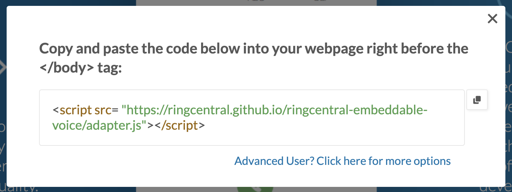
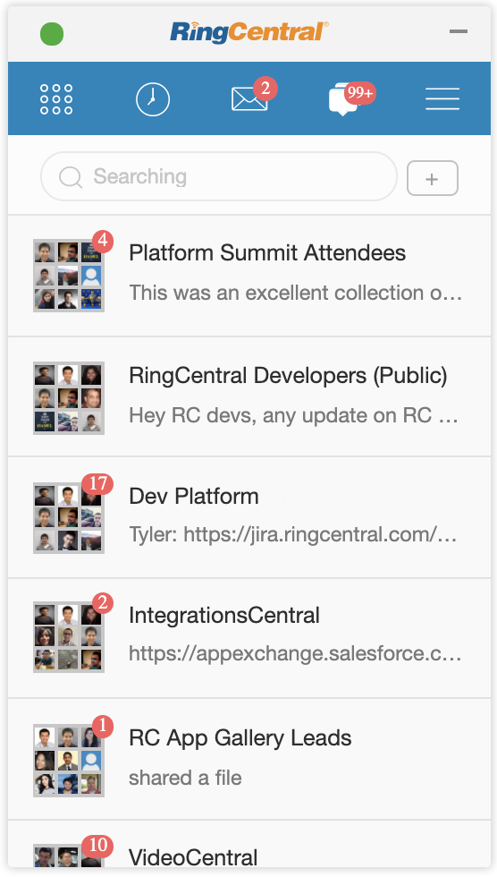
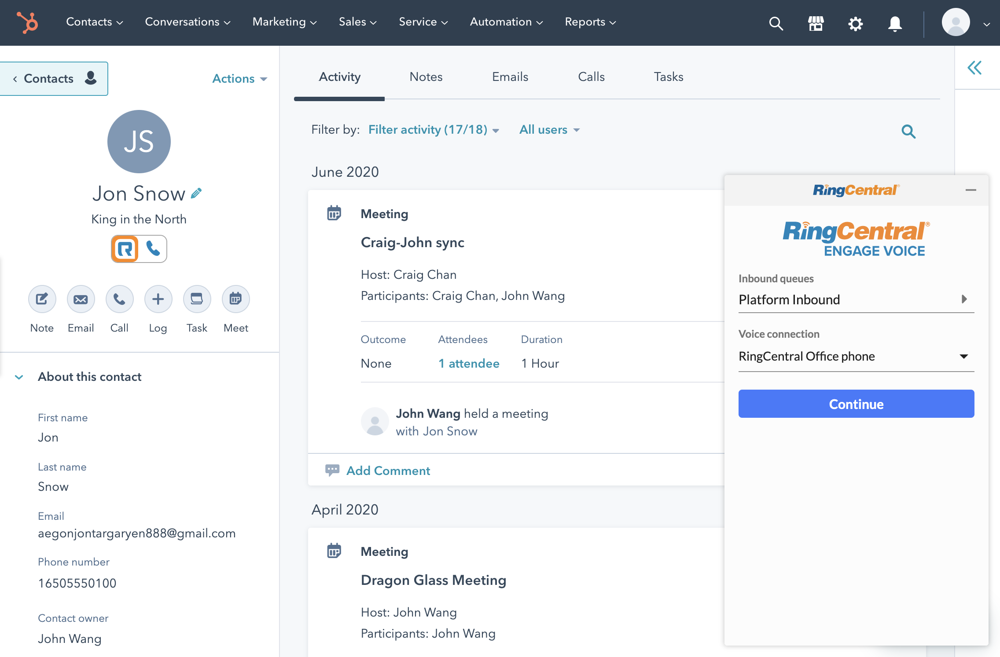
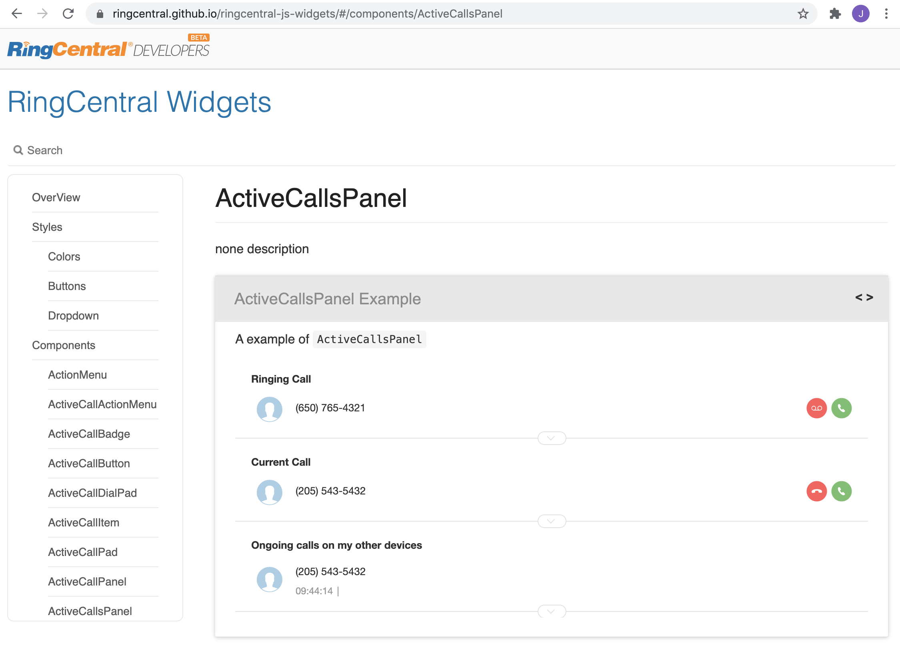

class: middle, center, inverse [<svg width="80" height="80" viewBox="0 0 250 250" style="fill:#fff; color:#0073ae; position: absolute; top: 0; border: 0; right: 0;" aria-hidden="true"><path d="M0,0 L115,115 L130,115 L142,142 L250,250 L250,0 Z"></path><path d="M128.3,109.0 C113.8,99.7 119.0,89.6 119.0,89.6 C122.0,82.7 120.5,78.6 120.5,78.6 C119.2,72.0 123.4,76.3 123.4,76.3 C127.3,80.9 125.5,87.3 125.5,87.3 C122.9,97.6 130.6,101.9 134.4,103.2" fill="currentColor" style="transform-origin: 130px 106px;" class="octo-arm"></path><path d="M115.0,115.0 C114.9,115.1 118.7,116.5 119.8,115.4 L133.7,101.6 C136.9,99.2 139.9,98.4 142.2,98.6 C133.8,88.0 127.5,74.4 143.8,58.0 C148.5,53.4 154.0,51.2 159.7,51.0 C160.3,49.4 163.2,43.6 171.4,40.1 C171.4,40.1 176.1,42.5 178.8,56.2 C183.1,58.6 187.2,61.8 190.9,65.4 C194.5,69.0 197.7,73.2 200.1,77.6 C213.8,80.2 216.3,84.9 216.3,84.9 C212.7,93.1 206.9,96.0 205.4,96.6 C205.1,102.4 203.0,107.8 198.3,112.5 C181.9,128.9 168.3,122.5 157.7,114.1 C157.9,116.9 156.7,120.9 152.7,124.9 L141.0,136.5 C139.8,137.7 141.6,141.9 141.8,141.8 Z" fill="currentColor" class="octo-body"></path></svg>](https://github.com/grokify/ringcentral-slides/tree/master/engage/digital/overview) <center> [<img src="images/hero_ringcentral-api-spotlight_2.png" style="width:100%;height:auto"/>](https://developer.ringcentral.com) </center> ## Embeddable --- name:agenda class:inverse,middle ### Agenda * What is Embeddable? * Message * Video * Phone * Engage * Community Integrations * Technology Components * Embeddable APIs * Embeddable Events * React Component Library --- class: middle, center, inverse ### Embeddable is a web widget SDK version of our Google Chrome Extension which supports Message, Video and Phone. --- class: middle, center, inverse ### Installable with 1 line of code <center>  </center> --- name: message class: inverse,middle,center ### Message - Chat Anywhere Glip chat is available in Embeddable as a beta. <center>  </center> --- name: video class: inverse,center ### Video - Deep Integration Embeddable supports RC Video for scheduling, joining, starting meetings, along with historical meetings, recordings, click-to-schedule, and meeting log sync. <center> <img src="images/hubspot-video.png" style="width:90%;height:auto" /> </center> --- name: phone class: inverse,center,middle ### Phone - First-Class Integration Built-in WebRTC and Call Control straight from Google and Salesforce integrations. <center> <img src="images/embeddable-iron-bank.png" style="width:90%;height:auto" /> </center> --- name: engage class: inverse,center,middle ### Engage Voice - Agent Widget Embeddable already supports Engage Voice is in beta. <center>  </center> --- name: community class: inverse,center,middle ### Community Integrations Fully-featured example integrations with code. [HubSpot](https://www.ringcentral.com/apps/hubspot) - [Engage](https://github.com/ringcentral/hubspot-embeddable-engage-phone) [Insightly](https://www.ringcentral.com/apps/insightly) [Pipedrive](https://www.ringcentral.com/apps/pipedrive) [Redtail CRM](https://www.ringcentral.com/apps/redtail-crm) [PracticeSuite](https://www.ringcentral.com/apps/practicesuite) --- name: platform class: middle, center, inverse ### Key Technology Concepts Drive Value and Functionality APIs - JavaScript events - window.postMessage() React component library --- name: api class: middle, center, inverse ### APIs drive Embeddable behavior [Go to Dialer and Start Call API](https://github.com/ringcentral/ringcentral-embeddable/blob/master/docs/control-widget.md#go-to-dial-and-start-a-call) [Go to SMS API](https://github.com/ringcentral/ringcentral-embeddable/blob/master/docs/control-widget.md#go-to-sms-page) [WebRTC Call Control API: answer, reject, hangup](https://github.com/ringcentral/ringcentral-embeddable/blob/master/docs/control-widget.md#control-the-web-call) [Logout API](https://github.com/ringcentral/ringcentral-embeddable/blob/master/docs/control-widget.md#log-out-user) [Minimize / Hide Widget API](https://github.com/ringcentral/ringcentral-embeddable/blob/master/docs/control-widget.md#minimizehideremove-the-widget) [Navigate To API](https://github.com/ringcentral/ringcentral-embeddable/blob/master/docs/control-widget.md#navigate-to) [Schedule Meeting API](https://github.com/ringcentral/ringcentral-embeddable/blob/master/docs/control-widget.md#schedule-a-meeting) --- name: api-example class: middle, inverse ### Example Transfer API Call <div style="font-size:70%"> ```js document.querySelector("#rc-widget-adapter-frame").contentWindow.postMessage({ type: 'rc-adapter-control-call', callAction: 'transfer', callId: `call id`, options: { transferNumber: 'transfer_number' } }, '*'); ``` </div> --- name: events class: inverse, middle, center ### Events [Working with Embeddable events](https://github.com/ringcentral/ringcentral-embeddable/blob/master/docs/widget-event.md) [Web phone call event](https://github.com/ringcentral/ringcentral-embeddable/blob/master/docs/widget-event.md#web-phone-call-event) [Ringout call event](https://github.com/ringcentral/ringcentral-embeddable/blob/master/docs/widget-event.md#ringout-call-event) [Active Call event](https://github.com/ringcentral/ringcentral-embeddable/blob/master/docs/widget-event.md#active-call-event) [Login Status event](https://github.com/ringcentral/ringcentral-embeddable/blob/master/docs/widget-event.md#login-status-event) [Message event](https://github.com/ringcentral/ringcentral-embeddable/blob/master/docs/widget-event.md#message-event) [Route event](https://github.com/ringcentral/ringcentral-embeddable/blob/master/docs/widget-event.md#route-changed-event) --- name: event-example class: inverse,middle ### Example Active Call Event Get all active calls in current RingCentral logged user (extension): <div style="font-size:70%"> ```js window.addEventListener('message', (e) => { const data = e.data; if (data) { switch (data.type) { case 'rc-active-call-notify': // get call on active call updated event console.log(data.call); break; default: break; } } }); ``` </div> --- name: react-components class: inverse,center ### Compose your own UI with our React Component Library <center>  </center> https://github.com/ringcentral/ringcentral-js-widgets https://ringcentral.github.io/ringcentral-js-widgets --- class: inverse [<svg width="80" height="80" viewBox="0 0 250 250" style="fill:#fff; color:#0073ae; position: absolute; top: 0; border: 0; right: 0;" aria-hidden="true"><path d="M0,0 L115,115 L130,115 L142,142 L250,250 L250,0 Z"></path><path d="M128.3,109.0 C113.8,99.7 119.0,89.6 119.0,89.6 C122.0,82.7 120.5,78.6 120.5,78.6 C119.2,72.0 123.4,76.3 123.4,76.3 C127.3,80.9 125.5,87.3 125.5,87.3 C122.9,97.6 130.6,101.9 134.4,103.2" fill="currentColor" style="transform-origin: 130px 106px;" class="octo-arm"></path><path d="M115.0,115.0 C114.9,115.1 118.7,116.5 119.8,115.4 L133.7,101.6 C136.9,99.2 139.9,98.4 142.2,98.6 C133.8,88.0 127.5,74.4 143.8,58.0 C148.5,53.4 154.0,51.2 159.7,51.0 C160.3,49.4 163.2,43.6 171.4,40.1 C171.4,40.1 176.1,42.5 178.8,56.2 C183.1,58.6 187.2,61.8 190.9,65.4 C194.5,69.0 197.7,73.2 200.1,77.6 C213.8,80.2 216.3,84.9 216.3,84.9 C212.7,93.1 206.9,96.0 205.4,96.6 C205.1,102.4 203.0,107.8 198.3,112.5 C181.9,128.9 168.3,122.5 157.7,114.1 C157.9,116.9 156.7,120.9 152.7,124.9 L141.0,136.5 C139.8,137.7 141.6,141.9 141.8,141.8 Z" fill="currentColor" class="octo-body"></path></svg>](https://github.com/grokify/ringcentral-polling-and-syncing) ### More Info Presentation * [Embeddable Overview](https://grokify.github.io/ringcentral-slides/embeddable/overview) SDKs & Apps * [Embeddable](https://github.com/ringcentral/ringcentral-embeddable) * [React Components](https://github.com/ringcentral/ringcentral-js-widgets) * [HubSpot](https://github.com/ringcentral/hubspot-embeddable-ringcentral-phone) * [Insightly](https://github.com/ringcentral/insightly-embeddable-ringcentral-phone) * [Pipedrive](https://github.com/ringcentral/pipedrive-embeddable-ringcentral-phone-spa) * [PracticeSuite](https://github.com/ringcentral/ringcentral-for-practicesuite) * [Redtail CRM](https://github.com/ringcentral/redtail-embeddable-ringcentral-phone) --- class: inverse,middle [<svg width="80" height="80" viewBox="0 0 250 250" style="fill:#fff; color:#0073ae; position: absolute; top: 0; border: 0; right: 0;" aria-hidden="true"><path d="M0,0 L115,115 L130,115 L142,142 L250,250 L250,0 Z"></path><path d="M128.3,109.0 C113.8,99.7 119.0,89.6 119.0,89.6 C122.0,82.7 120.5,78.6 120.5,78.6 C119.2,72.0 123.4,76.3 123.4,76.3 C127.3,80.9 125.5,87.3 125.5,87.3 C122.9,97.6 130.6,101.9 134.4,103.2" fill="currentColor" style="transform-origin: 130px 106px;" class="octo-arm"></path><path d="M115.0,115.0 C114.9,115.1 118.7,116.5 119.8,115.4 L133.7,101.6 C136.9,99.2 139.9,98.4 142.2,98.6 C133.8,88.0 127.5,74.4 143.8,58.0 C148.5,53.4 154.0,51.2 159.7,51.0 C160.3,49.4 163.2,43.6 171.4,40.1 C171.4,40.1 176.1,42.5 178.8,56.2 C183.1,58.6 187.2,61.8 190.9,65.4 C194.5,69.0 197.7,73.2 200.1,77.6 C213.8,80.2 216.3,84.9 216.3,84.9 C212.7,93.1 206.9,96.0 205.4,96.6 C205.1,102.4 203.0,107.8 198.3,112.5 C181.9,128.9 168.3,122.5 157.7,114.1 C157.9,116.9 156.7,120.9 152.7,124.9 L141.0,136.5 C139.8,137.7 141.6,141.9 141.8,141.8 Z" fill="currentColor" class="octo-body"></path></svg>](https://github.com/grokify/ringcentral-polling-and-syncing) ### Get and Stay Involved Dev Portal - https://developers.ringcentral.com/ GitHub - https://github.com/ringcentral Blog - https://medium.com/ringcentral-developers Twitter - https://twitter.com/ringcentraldevs